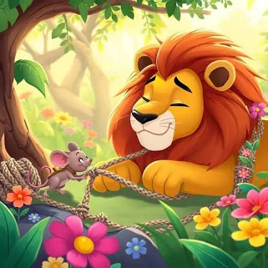

Even the smallest friend can be a great help.

One day, a mighty lion was sleeping peacefully under a large tree in the forest. A little mouse came running and accidentally climbed over the lion's body. The lion woke up angrily and caught the tiny mouse with his huge paw. The frightened mouse begged, "Please forgive me, Your Majesty. If you let me go, I may help you someday." The lion laughed loudly. "You? Help me? You are so small!" Still, he felt sorry for the little mouse and set him free. A few days later, the lion was caught in a hunter's strong net. He roared loudly for help. The little mouse heard the roar and hurried to the lion. Without wasting a moment, the mouse began chewing the thick ropes with his sharp teeth. After some time, the ropes broke and the lion escaped safely. The lion smiled and said, "My little friend, I laughed at you because you were small. Today you have saved my life. I have learned that no one is too small to help others." The mouse happily replied, "Kindness is never wasted." The two became good friends and lived happily in the forest.
Kindness is always rewarded, and even the smallest friend can make a big difference.